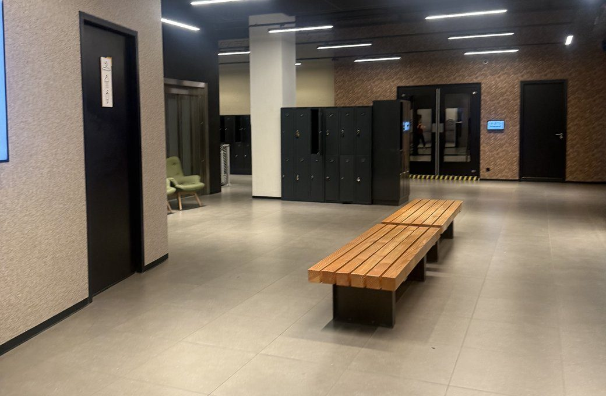

Where to begin
If you don't know how and where to begin, this page is specially made for you. Follow three simple steps: assess where you are right now, set a clear goal and begin with a plan you can consistently do. No experience or equipment needed, just a willingness to start.
Learn More →